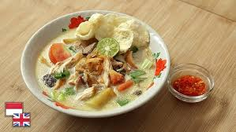

Soto Betawi
15.000
Soto Betawi itu creamy, gurihnya nendang, dan aromanya langsung bikin lapar. Daging empuk, kuah santan tebal tapi nggak enek, plus sensasi rempah yang rapi. Tekstur lengkap—lembut, kenyal, crunchy dari empingnya. Harga? Masih masuk akal buat semangkuk comfort food yang selalu menang di hati.